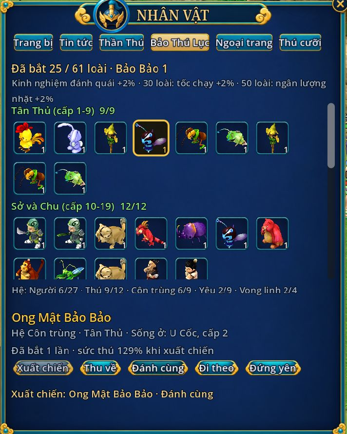
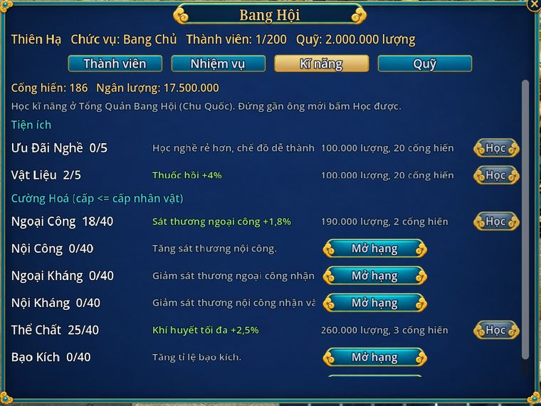
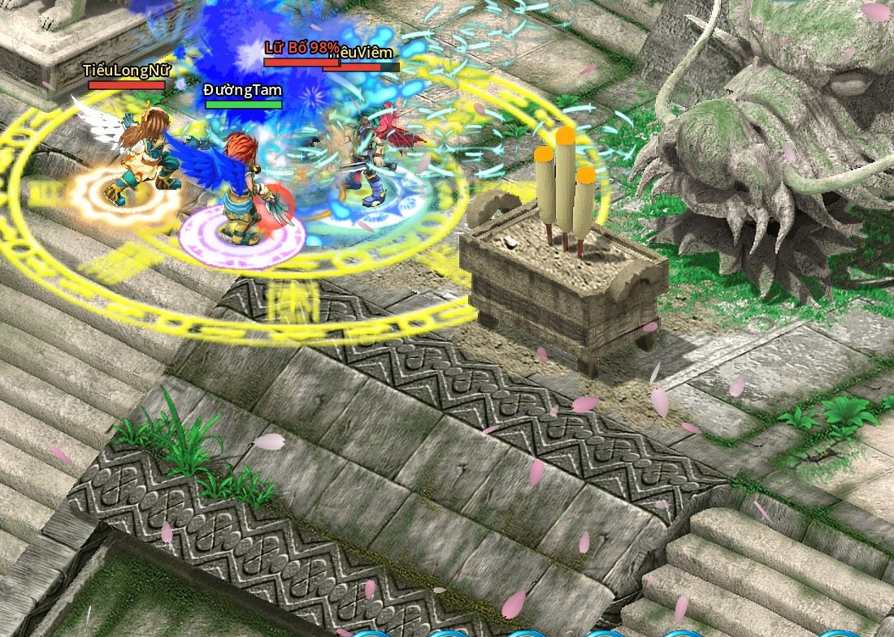

MMORPG Chiến Quốc 2008, hồi sinh
Chiến Quốc Remaster
Cố nhân, đã đến lúc trở lại.
Vẫn là Tân Thủ Thôn ngày ấy, vẫn hoa đào bên bờ sông Đào Nguyên. Nay chơi online cùng bằng hữu, miễn phí và không nạp thẻ.
Xem video: ba anh hùng đấu Lữ Bố- 7môn phái, mỗi phái hai nhánh
- 50cấp tối đa, 14 bản đồ mới ở 4.0
- 34thú cưỡi để sưu tập
- 0đồng nạp thẻ
Đã phát
Bản 5.0: giang hồ rộng hơn
Học nghề hái thuốc, đào khoáng, mở Bảo Rương. Ném Dây Càn Khôn bắt thú cùng xuất chiến. Lập bang với bằng hữu, bày sạp ở chợ Chu Quốc. Thêm 28 chiêu cấp 45 và 50, rèn đồ chỉ cần ngân lượng.
Bản 5.2 Đã phát : truy bắt một chuyến mỗi ngày, đi một mình hay cả đội; Bách Gia Lệnh đổi quà ở Thiên Sứ Trao Đổi; sư môn 20 việc; thợ rèn phục hồi độ bền; Mao Sơn làm lại bốn chiêu. Xem bản 5.2.
Bản 5.1 Đã phát : Tự Đánh (Alt+A, miễn phí 30 phút mỗi ngày), Ngân Lượng Bao, sư phụ tái tạo dòng set và đổi Tử Kim Tinh lấy đồ rèn. Xem bản 5.1.
-

Bảo Thú Lục Bắt thú, cùng xuất chiến Đánh quái gần chết rồi ném Dây Càn Khôn. 61 loài để sưu tập, 1 % ra Bảo Bảo. Chọn một con xuất chiến đánh cùng bạn, lên cấp theo bạn. -
 Kĩ năng nghề
Năm nghề, Bảo Rương
Dược Sư, Luyện Đơn, Thái Dã, Cơ Quan, Đầu Bếp. Làm là lên cấp, không tốn thể lực.
Kĩ năng nghề
Năm nghề, Bảo Rương
Dược Sư, Luyện Đơn, Thái Dã, Cơ Quan, Đầu Bếp. Làm là lên cấp, không tốn thể lực.
-

Bang hội Lập bang Nhiệm vụ bang, quỹ, kĩ năng bang. -
 Bày bán
Sạp chợ Chu
Bán đồ cho người chơi, chợ bot có đồ Vàng.
Bày bán
Sạp chợ Chu
Bán đồ cho người chơi, chợ bot có đồ Vàng.
- Kĩ năng 28 chiêu cấp 45 và 50 Mỗi nhánh của bảy phái thêm hai hàng chiêu, phần lớn là chiêu bản gốc.
- Rèn đồ Rèn bằng ngân lượng Bỏ đá Tái Tạo, Thăng Phẩm. Tăng phẩm dễ hơn.
- Tiền mới Kim Nguyên Bảo Rơi từ Trộm Bảo Phi Tặc theo cấp con trộm.
Quay trong game, có nhạc nền
Ba anh hùng, một Lữ Bố
Đường Tam, Tiêu Viêm và Tiểu Long Nữ cùng vào Cổ Mộ, hạ Lữ Bố rồi lật thẻ chia đồ. Pháp bảo dưới chân, cánh trên lưng, vũ khí 10 sao rực sáng.


Có gì trong game
Đánh phó bản cùng bằng hữu, sưu tập thú cưỡi, rèn món đồ 10 sao, hay chỉ ngồi câu cá bên hồ thành Chu.
-

Phó bản Cổ Mộ: đấu Lữ Bố Đội 1 tới 5 người, ba độ khó Thường, Khó, Địa Ngục. Lữ Bố biết đổi mục tiêu, xung phong, hoá dạng thứ hai. Hạ xong lật thẻ nhận Tinh Thạch, pháp bảo, thú cưỡi. -
 Môn phái
Bảy môn phái
Cây kĩ năng hai nhánh, tự chọn lối đánh.
Môn phái
Bảy môn phái
Cây kĩ năng hai nhánh, tự chọn lối đánh.
- Phó bản cấp 40 Thành Kiều: 4 boss Doanh trại phản quân ở nước Tần. Hạ đủ bốn tướng mới mở bảng thẻ cuối, có Tử Kim Tinh.
-
 Sưu tập
34 thú cưỡi, 12 thần thú
Mỗi con cộng chỉ số, đủ 10 sao có con đổi hình.
Sưu tập
34 thú cưỡi, 12 thần thú
Mỗi con cộng chỉ số, đủ 10 sao có con đổi hình.
- Thư giãn Câu cá bên hồ Từ cấp 20, ngồi câu ở Ngư Ông, 240 lần mỗi ngày. Ngư Điểm đổi Thú Hồn, thú cưỡi Cá Voi Đom Đóm.
-

 Rèn đồ
Nâng sao, Bùa Ma Thuật
Đồ lên 10 sao, khảm Tinh Thạch, tái tạo dòng. Có Bùa thì xịt vẫn giữ sao.
Rèn đồ
Nâng sao, Bùa Ma Thuật
Đồ lên 10 sao, khảm Tinh Thạch, tái tạo dòng. Có Bùa thì xịt vẫn giữ sao.
-
 Online
Chơi cùng bằng hữu
Tổ đội 5 người, chia kinh nghiệm, kênh chat Thế Giới. Cùng nhau truy bắt phản đồ, càn quét Phong Yêu Kính, săn Tống Bảo Tiểu Yêu.
Online
Chơi cùng bằng hữu
Tổ đội 5 người, chia kinh nghiệm, kênh chat Thế Giới. Cùng nhau truy bắt phản đồ, càn quét Phong Yêu Kính, săn Tống Bảo Tiểu Yêu.
Bảy môn phái
Đủ cấp 10 thì tới căn cứ bái sư. Mỗi phái hai nhánh chiêu, đổi nhánh được ở sư phụ.


Làm vì yêu Chiến Quốc
Chiến Quốc Remaster được làm bởi cộng đồng những người thực sự yêu thích Chiến Quốc, không phải bởi một công ty.
-
Từ cộng đồng, cho cộng đồng
Mỗi bản sửa, mỗi tính năng đều đến từ những người từng chơi Chiến Quốc và muốn thấy nó sống lại.
-
Miễn phí mãi mãi
Không nạp thẻ, không bán vật phẩm, không có bất cứ hình thức thu tiền nào.
-
Giữ cốt lõi, sửa lỗi, cân bằng
Duy trì mọi giá trị cốt lõi của game cũ, đồng thời sửa các lỗi và cân bằng lại lối chơi.
Tham gia cộng đồng
Góp ý, báo lỗi, rủ nhau đi phó bản. Tin mới về các bản sau cũng báo ở đây trước.
Cài đặt 3 bước
-
Tải và giải nén
Tải file zip (39 MB), giải nén vào một thư mục bình thường, đừng để trong Program Files.
-
Chạy launcher
Mở thư mục ChienQuocRemaster, chạy ChienQuocRemaster.exe. Lần đầu launcher tự tải gói game khoảng 7 GB, lần sau chỉ tải phần mới. Launcher tự cập nhật cả chính nó.
-
Tạo tài khoản
Đăng kí ngay ở màn đăng nhập, tạo nhân vật rồi vào game. Mới chơi thì đọc Bắt đầu.
Đã chơi bản 3.0: tải launcher 3.1 một lần, giải nén đè lên thư mục ChienQuocRemaster cũ (giữ nguyên thư mục packs thì không phải tải lại dữ liệu đã có). Launcher 3.0 không vào được bản 3.1.
Windows báo "Windows protected your PC" thì bấm More info, rồi Run anyway. Launcher chưa có chữ kí số, không phải virus.
Quà tân thủ: welcome
Nhập ở Thần Tiên Gia Gia (Tân Thủ Thôn), mỗi nhân vật nhận một lần: 50 Thẻ Lăng Ba Vi Bộ, 2 Sơ Cấp Đoạn Thạch, 20 Hành Quân Tán, 30 Phi Hành Phù và 10.000 ngân lượng (đồ khoá, cần 5 ô hành trang trống).
- Hệ điều hành
- Windows 10 hoặc 11, 64 bit
- Ổ trống
- Ít nhất 10 GB
- Bộ nhớ
- 8 GB RAM
- Đồ hoạ
- Card 2 GB, OpenGL 3.3
- Mạng
- Cần Internet
Từ kí ức tới máy chủ mới
-
Chiến Quốc ra mắt
MMORPG 2.5D isometric, bảy nước, bảy môn phái. Tuổi thơ của cả một thế hệ game thủ Việt.
-
Bản demo 2.0, chơi offline
Lần đầu người chơi quay lại Tân Thủ Thôn: bốn vùng đất, cốt truyện Vết Nứt, môn phái Cấm Vệ Quân và cuộc gặp gỡ Lữ Bố.
-
Bản 3.0, chơi online
Máy chủ mới, chơi cùng bằng hữu. Đủ bảy môn phái, cấp tối đa 40, Cổ Mộ, thú cưỡi, thần thú. Launcher tự tải và tự cập nhật game.
-
Bản 4.0 tới 4.2, trần cấp 50
Biển Đông, nước Tần và phó bản Thành Kiều; Trộm Bảo Phi Tặc, kĩ năng giang hồ; 30 ô phím như bản gốc, tỉ thí, nhắn tin bằng hữu.
-
Bản 5.0 và 5.1
Kĩ năng nghề, Bảo Thú Lục, bang hội, bày bán, 28 chiêu cấp 45 và 50; bản 5.1 thêm Tự Đánh.
-
Bản 5.2
Truy bắt một chuyến mỗi ngày, Bách Gia Lệnh, sư môn 20 việc, phục hồi độ bền, cân lại bốn phái. Xem mọi phiên bản.